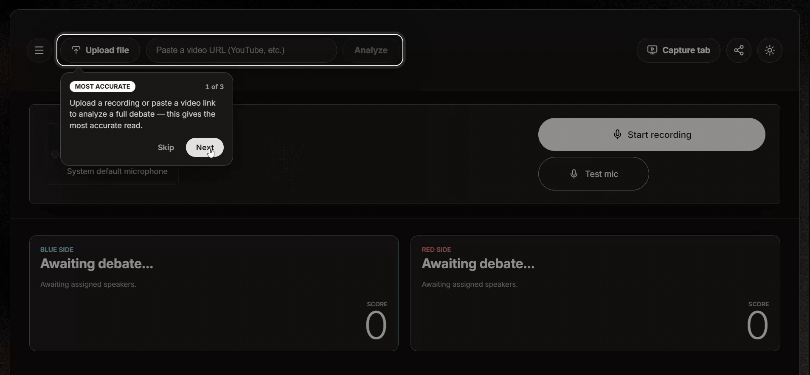
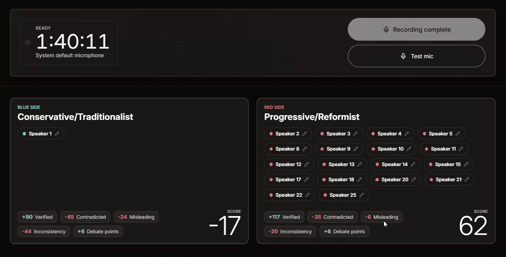
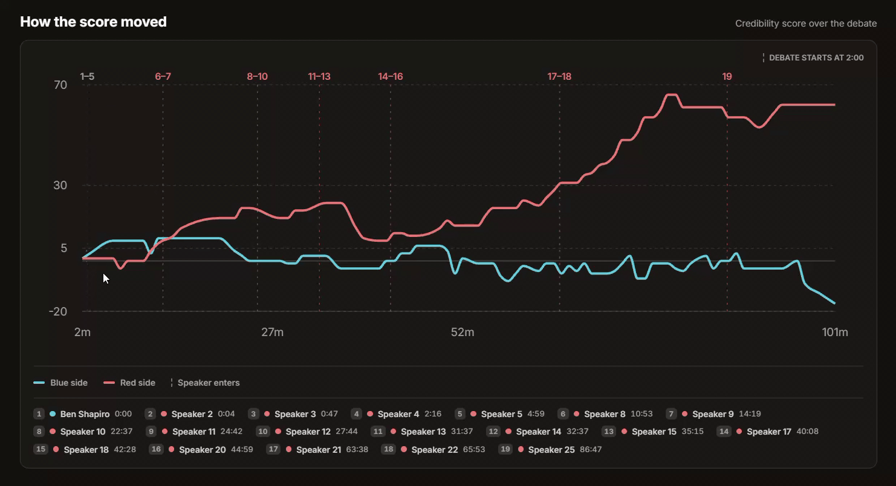
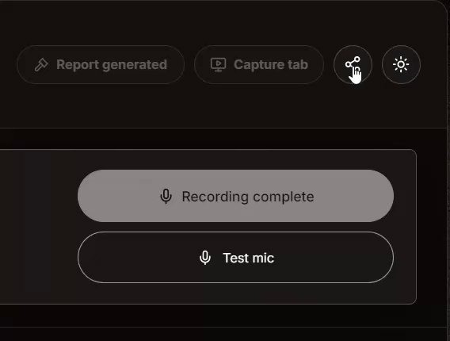

Watch any debate. See who's actually telling the truth.

In a live debate, sounding confident and being right look exactly the same. Debatly tells them apart while the debate is still happening: who said it, whether it checks out, and whether they contradicted themselves an hour ago.

Why this one is personal
I have always been intrigued by debate. All through school and college I signed up for debate competitions: on stage, on the clock, trying to track who said what and whether it actually held up under the next question. Debatly grew straight out of that. It is the tool I wished I had back then, something that can follow a live argument, catch the claims as they land, and tell the difference between sounding confident and being right.
01The problem
Watch anyone react to a debate live. Someone makes a confident factual claim, and the host has about three seconds to decide: let it go, or stop everything and search for it. Letting it go means amplifying something that might be false. Stopping kills the pace, which is the whole product for a live show.
The tools that exist pick one half of the problem. Transcription stops at what was said. Written fact-checks arrive the next day, long after the audience has gone. Nobody had put attribution, verification, and a running judgment in the same place, live.
And there's a harder problem underneath. In a real debate people interrupt and talk over each other. A perfect transcript still can't tell you who made the claim, and a fact-check attached to the wrong person is worse than no fact-check at all. Every feature in this product inherits that one accuracy number.
02Who it's for
I built this for debate reactors: the YouTubers, streamers, and clip channels whose job is watching people argue. Panel shows, political debates, podcast clashes. They're the people who feel this pain professionally, several hours a week.
Creators who react to or clip debate content. They already have the mic, the second screen, and an audience that shows up for their take.
"Someone just said something that sounds wrong, I'm live, and I have three seconds to decide whether to challenge it."
Being right is their brand. Amplifying a false claim costs them real credibility, so accuracy is a business input, not a nice-to-have.
Who it's not for: academic debate judges, who score argument quality and rhetoric rather than factual truth, so the whole scoring model is wrong for them. Newsrooms, who need editorial sign-off and legal review and cannot publish a machine's verdict. And casual viewers, who feel this once a month and will never pay for it. Saying no to all three is what let the product commit to a truth score instead of trying to also be a debate-judging rubric.
03See it work
Ninety seconds, with sound on.
The screenshot at the top is a real session: a 1 hour 40 minute panel debate with 25 speakers, the kind of multi-person format that breaks most speaker-detection systems. From 1,010 transcribed turns it produced 157 debate points, 105 fact-checked claims, and 16 inconsistencies, with both sides scored live and a full report at the end. Every recording you'll see below is that same debate, captured from the live app.
You can also just open it. Any debate becomes a share link that loads the whole analysis for anyone, no signup:
04The hard part: who said it
Getting the words is a solved problem you can buy. Getting who said them, live, through crosstalk, is not. So that layer got the investment, even though it's the one users never see.
There are two ways in, and they use different tools on purpose:

Every door in, in one take. Live mic, a browser tab's audio, an uploaded file, or a pasted video link. All four end up in the same pipeline.
Path 1 · LiveBrowser
Streams audio to the server over a WebSocket.
The words
Transcribes speech to text as it happens.
The voices
Silero VAD plus pyannote/wespeaker voice fingerprints, clustered online with a profile per speaker.
Word to speaker merge
Each word gets matched to a voice fingerprint, so a speaker keeps the same label for the whole debate.
Audio, video, or a video URL
The server pulls the audio out with ffmpeg.
pyannote.ai precision-2 + faster-whisper-large-v3-turbo
Batch mode gets the whole recording at once instead of guessing from a rolling window, which is why uploads give the cleanest speaker labels the product can produce.
The honest version of this story. I didn't build the speech models. Speechmatics does the words, and the speaker fingerprinting uses open pyannote and wespeaker models. What I built is the merge, and the decision to split the job in two: let one system be excellent at words, let another be excellent at voices, and stitch them together rather than accepting one vendor's mediocre version of both.
What that swap actually bought. The first version used per-window speaker detection, and labels drifted: the same person could become a new speaker later in the debate. I replaced it with a stateful engine that keeps a persistent voice profile per speaker, so labels stay stable across a whole session. Validated locally, it held a consistent 6-speaker set and ran at about 0.6 seconds of compute per 4 seconds of audio on CPU, roughly 6.7× faster than real time, which is what makes live viable without a GPU.
The safety valve. When the fingerprinting can't confidently place a word, it falls back to the transcription service's own speaker label rather than dropping the word. A slightly wrong label is recoverable. A missing sentence is not.
05The gate: teaching software to know a debate started
This is the part I'm proudest of, and it started with a question that has nothing to do with code: if you could only hear a debate, with no picture, how would you know it had begun?
You wouldn't start a timer. You'd wait until someone stopped introducing things and started taking a position, and held it long enough that you believed they were a participant rather than a host. That's the whole idea behind the Stabilizer Gate, and I built every node in the pipeline on the same principle: work out how a person does it by ear, then encode that.
Why not just skip the first two minutes? Because across the five debates I tested, the real start landed at 0:45, 1:30, 2:00, 4:30 and 5:15. Any fixed rule fails four out of five. The gate doesn't guess the time; it watches for a speaker who has sustained stance-bearing speech, weighs host signals against argument signals, and only then opens.
Opening late without losing anything. Look at the two right columns. The gate opens at 1:30 but the transcript it hands downstream starts at 1:12. When a speaker is finally judged durable, the gate backfills their words from their first observed turn, so being careful about when to open costs nothing. That was the design problem: a gate that opens early is noisy, a gate that opens late loses the opening argument. Backfill means it can afford to be patient.
It reserves rather than rejects. When continuity breaks mid-debate, the segment isn't thrown away, it's held. If it reconnects to the debate it's released; only when the intent is clearly an ad does it get rejected. In the fourth test the gate caught a sponsor read at 5:58 to 6:56 and dropped exactly that, then carried on. It also never closes once open, so a commercial break can't end the show.
What it decides, in its own words. The gate classifies the opening into types like cold_open_or_montage_followed_by_host_intro and possible_two_speaker_live_exchange, then scores each speaker on evidence: words spoken, turn count, host-signal hits versus argument-signal hits. Speaker 1 in the first test cleared at 0.72 confidence on 1,742 words across 112 turns, with 21 argument signals against 1 host signal. And it deliberately does not assign sides. That's the next node's job. Each node gets one decision.
Gate open times, backfill points, opening types, and per-speaker evidence are read from the five-scenario benchmark run in .benchmarks/speechmatics-stabilizer-gate-test3-20min-final/.
06The pipeline
Once the words have owners, the transcript is cut into 60-second packets and every packet walks the same graph. It isn't one long chain. The head is linear because those steps genuinely depend on each other, then it fans out into three independent branches and fans back in.
Stabilizer Gate
Nothing moves until the gate opens. After that it stays open and tags ads, intros, moderator chatter, and off-topic drift so later nodes skip them.
Side Builder
Sorts speakers into Blue and Red and writes each side's thesis from what they actually argue. Its ledger, plus the packet, is what feeds everything below.
Debate Point Builder
Pulls out the genuinely good arguments and tags each as a principle, a foundation, evidence, or a rebuttal.
Family Merger
Groups near-duplicates into themed families, so an argument made five times isn't five arguments.
Claim Builder
Finds statements checkable against the outside world and frames a clean search query for each. Opinions are not claims.
Fact Queue
Lines the claims up so a fast exchange never floods the search API.
Fact Checker
Searches, reads the sources, and returns one verdict per claim.
Inconsistency Builder
Catches a speaker contradicting themselves, and catches two people on the same side holding incompatible positions.
Scoring Engine not AI
Tallies the tags the three branches produced. Recomputed on every packet, so the scoreboard moves live.
Why branches instead of a chain. Arguments, checkable claims, and contradictions are three different readings of the same minute of speech. None of them needs the others' output. Wiring them in a line would mean each one waits on work it doesn't use, and a failure in one would take down the other two. As independent branches, each keeps its own ledger so it never re-processes what it has already seen, and the whole graph degrades gracefully: if the fact-checker has a bad minute, arguments and contradictions still land on the board.
Different jobs, different clocks. Debate points and claims run every packet. Family merging and contradiction-hunting run every second packet, because both need accumulated history to be worth anything, and running them every minute would burn tokens to re-decide the same thing. The fact-checker takes three claims a packet regardless of how fast people talk.
One brain, every job. Every thinking node runs the same model at the same setting: gemini-3.1-flash-lite at thinking level medium, defined once in one shared file. No node re-implements how to call a model, and swapping the model is a one-line change in one place. Reaching for a bigger model per node is tempting; keeping it uniform is what made the pipeline cheap and easy to reason about.
07Fact checking: search first, model second
The obvious way to fact-check with Gemini is to hand it the claim and turn on Google Search grounding. I built that first. Then I tried splitting the job in two, and the split won on both speed and source quality, so it became the main path.
1 · Search
Runs the claim's framed query and returns real sources: title, URL, snippet.
2 · Judge
Reads only those snippets and writes the verdict, the tag, and a one-line reason. It is not allowed to go searching again.
Fallback
Only if Firecrawl finds nothing usable, that single claim escalates to Gemini grounding.
Why this order. Letting the model search and judge in one call makes it hard to know which half failed. Splitting them means the search returns citable sources the user can click, and the model does the one thing it's good at: reading and deciding. It also turned out to be faster and to produce cleaner sources than grounding, which is why grounding got demoted to the backup path rather than deleted.
Four verdicts, no hedging. Every checked claim lands on exactly one: verified (sources confirm it as stated), contradicted (sources refute it), misleading (the core fact is real but mis-attributed, exaggerated, or missing key context), or no clear source (nothing authoritative either way). That last one matters: "we couldn't find out" is an honest answer, and it scores zero rather than being quietly counted against anyone.
Throttling is a product decision. Claims go through a queue three at a time rather than all at once. A heated exchange can produce claims faster than any search API wants to serve them, and a fact-checker that falls over during the best part of the debate is useless.

Claims, live. 105 in this debate, split 53 Blue and 52 Red. Every card carries the verdict, the exact quote it came from, and for anything not verified, the reason plus real clickable sources. The contradicted one here is a good example of why the reason matters: a speaker said Asian Americans received reparations after the Chinese Exclusion Act, and the sources show the 1988 Civil Liberties Act paid reparations to Japanese Americans for WWII incarceration instead. Close enough to sound right, wrong enough to matter.
08The score is arithmetic, not an opinion
This was the most important call on the product. The moment an AI declares who won a political debate, it's a bias story, and nobody trusts anything else on the screen. So the scoring engine contains no AI at all.
The thinking steps already made every judgment: this claim is verified, that one is contradicted, that's a double standard. The scoring engine just tallies those decisions at fixed values. Same debate in, same score out, every single time.
Both sides start at zero, and a side can go negative, which happens when someone gets caught out more than they get proven right. Volume never wins: talking more just gives you more chances to be checked.
The receipt. Here's the real scoreboard from a 1:40 debate, straight out of the app. Every number traces to cards the user can open, and the totals are just addition:

One speaker on Blue, eighteen on Red. The chips under each side are the whole scoring model, made visible. Blue: 90 − 45 − 24 − 44 + 6 = −17. Red: 117 − 35 − 6 − 20 + 6 = 62. Do the addition yourself, it comes out the same.
That's the point of the design. Anyone who dislikes the result can open every card, check every source, and redo the arithmetic. And the report never declares a winner. It shows the facts, the score, and its own method, then leaves the judgment to the person watching. A tool that tells people who won gets argued with. A tool that shows its work gets used.
09The board, the report, and getting it out
Everything the pipeline produces lands on one board while the debate runs, split into three tabs. Then you hit stop, and the report runs a second pass over the whole session.

Debate points. Not a list, a structure. Arguments are grouped into themed families ("Critique of DEI Principles and Foundations", 10 points; "Addressing Historical and Systemic Inequality", 5) so an argument made repeatedly reads as one thread. Each point is tagged by what it's doing: principle, foundation, evidence, or rebuttal. Every one keeps the verbatim quote it came from.

Inconsistencies, at two scopes. This is the part people don't expect. self-contradiction is scoped to a speaker: one person's own two quotes placed side by side. double-standard is scoped to a side, catching two different people on the same team holding incompatible positions, like one speaker defining moral status at legal personhood while their teammate argues the opposite standard. A team can be incoherent without any individual flip-flopping, and nothing else on the board would catch that.

The transcript underneath it all. 1,010 speaker-labeled turns from this one debate, color-coded by side. Everything above is derived from this, so it stays one click away and downloadable as a plain text file with labels and timestamps intact. If you don't trust a verdict, you can read the source.
Hit stop, get a report
Ending the debate triggers a second analysis pass over the whole session, not just a summary of the board.

How the score moved. Credibility plotted across all 101 minutes for both sides, with a marker every time a new speaker enters. My own description of it is the best one: it's the fall-of-wickets chart from cricket. You can see the exact stretch where Red pulled away, and which speaker walked in right before it. Note the annotation at the left: "debate starts at 2:00". That's the gate's decision, printed on the chart.

Who held up, and who got caught out. Every speaker's net contribution as a bar, then a card each. Speaker 1 finished at −17 on 30 verified, 9 false, 12 misleading, and 11 self-contradictions. Speaker 22 finished at +21 on 8 verified and 2 misleading. Each card gets a one-line judging note and the speaker's standout quote, so the number always arrives with the sentence that earned it.
The written verdict is deliberately plain, and deliberately not a winner: "Red side ended ahead on credibility", followed by why, in prose, naming what actually went wrong instead of hinting at it. Here that was factual accuracy on administrative history, legislative records, and demographic statistics, plus repeated internal inconsistencies. The report also ships per-side summaries, turning points with gained and lost ground, and its own scoring methodology, so the method is auditable inside the artifact itself.

Three ways out of the app. A share link, a PDF, or the raw transcript.
Share a link, no signup
Any debate becomes a URL that loads the entire board and report for anyone who opens it. No account, no paywall, no request-access screen. The whole thing is just there.
PDF export
The full report as a real text-based PDF with vector charts, not screenshots. It stays searchable and selectable, because a fact-check you can't quote isn't much of a fact-check.
Transcript download
The complete diarized transcript as plain text with speaker labels and timestamps. The raw material, free, so anyone can check the work.
Why sharing had to be frictionless. The user is a creator. Their entire job is showing something to an audience, so a fact-check trapped behind a login is worthless to them. The share link is the growth loop and the credibility mechanism in one: a streamer drops it in chat, thousands of people open a working analysis with every source clickable. Gating that would have been the easiest possible way to kill it.
That link opens a full analysis in the live app with no account. That is the point.
10How I knew any of it worked
Everything on this page is a claim about quality, so it needed evidence. I built a benchmark harness with five real debates as fixed scenarios and hand-checked transcripts as ground truth, then ran 199 benchmark runs against them while building. Two of those runs changed the architecture.
Round one: picking a transcription vendor
First question: who does the words? I took a clip, transcribed it by hand as ground truth, and ran both contenders against it. AssemblyAI got tuned twice on its silence thresholds to give it a fair shot.
u3-rt-pro87.86%12.14%95.07%Speechmatics won on both axes, by roughly 6 points on words. Tuning AssemblyAI's turn-silence settings moved it about a quarter of a point, which is its own answer: that gap wasn't a config problem. And going realtime only cost Speechmatics 0.7 points against its own batch mode, which is what made live viable at all. Speechmatics got the job.
Round two: the hard clip breaks the winner
Round one was two people talking politely. Real debates aren't that. So I re-ran it on Scenario 1: 20 minutes, 8 speakers, 4,426 hand-checked words, people talking over each other. This time I added a dedicated diarization model to the comparison.
The winner of round one fell apart. Speechmatics kept its words at 87.91%, but its speaker accuracy dropped from 97.93% on two people to 80.30% on eight, and it only heard 6 of them. Speaker attribution doesn't degrade gently as a debate gets crowded, and you only find that out if you test on the hard thing. Round one would have shipped a system that broke on exactly the debates this product exists for.
Deepgram is the mirror image. Better ears, worse words. Neither vendor wins both, so the answer was to stop picking a vendor. Keep Speechmatics' words, hand the voices to pyannote, and merge: 87.91% on words and 88.80% on speakers, best-in-table twice. The architecture in section 4 isn't a preference. It's what this table said.
The fourth row is the one I keep thinking about. Telling pyannote there were exactly 8 speakers got the count right and made the result worse: consistency collapsed from 89% to 69%, because forcing the count makes it shuffle words around to hit the target. The honest system that guessed 7 beat the one handed the answer.
The oversplit problem, concretely. Deepgram found 10 speakers where there were 8, and the error isn't spread evenly: one real person had their words scattered across seven different labels, keeping only 78.67% together. That's the failure that breaks a fact-check, because the claim gets pinned on someone who never said it.
Then every node, over and over
Each node got the same treatment: run all five scenarios, read the output by hand, change one thing, run again. The benchmark folders are the record of it.
Family merging got 38 runs, more than any other node, and it's the least glamorous thing on the list. Deciding whether two arguments are actually the same argument turns out to be the hardest judgment in the product, and getting it wrong is loud: a board where the same point appears five times is unreadable. The gate took 13, including a moderator-specific fix after it kept mistaking hosts for debaters.
What made 199 runs possible
None of that volume happens by hand. One run means five debates through a full pipeline with real API calls, and then reading the output to judge whether it actually got better, which is not something a green test tick can tell you.
I leaned on Codex as a long-running coding agent for exactly this: hand it the scenario harness and a target, let it run the sweep, change one variable, run again, and report what moved, for as long as it took. I stayed the judge. It ran the loop. That's the difference between testing three versions of the family merger and testing fifteen, and fifteen is where the good one was.
Every number here comes from the JSON in .benchmarks/: the vendor table from the pyannote and Deepgram scenario-1 comparisons, the run counts from the benchmark directories, the thresholds and batch sizes from the shipped config.
11Tech stack
ws WebSocket
Zod
Supabase · Postgres + auth
ffmpeg · youtube-dl-exec
precision-2 · batch
faster-whisper-large-v3-turbo · batch
gemini-3.1-flash-lite · every pipeline node, thinking medium
Firecrawl · search
gemini-2.5-flash · grounding fallback
Why a plain VM and not serverless. This is the least fashionable decision in the project and the most necessary one. A single debate runs for hours on one connection, and serverless platforms cut long-lived connections. A VM also lets the server spawn the speaker-fingerprinting worker as a child process per live session, sized so it keeps up on CPU with no GPU. The boring choice was the only one that fit the actual job.
12What it still gets wrong
These are in the repo's README too. A tool whose whole pitch is honesty doesn't get to hide its own failure modes.
Overlapping speech
When two people talk over each other, a speaker change can be spotted slightly late, so the new speaker's first word or two can land on the previous one. One microphone genuinely cannot separate two voices in the same moment. This is physics, not a bug I can prompt away.
Live runs a couple of seconds behind
The speaker label is given a moment to settle before words are shown, because a fast wrong label is worse than a slightly slow right one. That's a deliberate trade, not a performance miss.
Live is CPU-bound
Every live debate spawns its own voice-fingerprint worker on the server. That handles a handful of simultaneous debates comfortably, but it doesn't scale for free. Heavy concurrency needs a bigger machine or a GPU.
Uploads beat live on accuracy
The upload path sees the whole recording at once and produces the cleanest speaker labels the product can make. If you want the best possible result, import the recording rather than capturing live. Saying that out loud costs me the flashier demo and it's still the right advice.
13The decisions that shaped it
14What it taught me
Invest where errors compound, not where they show. Live scoring is the demo. Speaker attribution is the product. Every claim, every contradiction, every point on the board inherits whether the right name got attached to the right sentence, so the invisible layer got the rebuild and the flashy layer got arithmetic. Prioritizing by dependency instead of by demo value is the same judgment any platform PM makes.
Trust is an architecture decision, not a copy decision. I could have written "unbiased" on the landing page. Instead the score is arithmetic anyone can redo, every point opens to its sources, and the product refuses to name a winner. You don't earn credibility by claiming it. You earn it by making yourself checkable.
The best model is usually the boring one. One small model at one setting across seven jobs, a search API in front of it instead of a clever grounded prompt, and a plain VM underneath. Every one of those beat the more impressive option on the thing that actually mattered.